Immunité
Notre environnement est peuplé de nombreux organisme étranger dont la plupart est souvent pathogénique malgré ceci les atteintes sont rares, il est important de préciser que certaine maladie n’affecte le corps qu’une seule fois dans la vie de l’individu donc le corps possédé des moyennes de défense constitué d’organe et des cellules forment dans l’ensemble le système immunitaire.
Il existe deux formes d’immunité :
- Immunité Non-spécifique (Naturelle)
- Immunité Spécifique.
I – Immunité Non-spécifique (Naturelle) :
est due à des barrières naturelle et des réaction inflammatoire et la phagocytose.
1 – Barrières naturelles : il existe différents types des barrières :
- Barriere mécanique : comme la peau est imperméable aux microbes.
- Barriere Chimique : comme larme, salive, sueur, suc-gastrique, muqueuse, ces liquides renferment des enzymes capables à détruire les microbes.
- Barriere Ecologique : sont des bactéries non-pathogène qui limite l’activité de certaines corps.
2 – Réaction inflammatoire : lorsque les barrières naturelles ne proviennent pas a empêché l’infiltration du microbe, la défense naturelle appelé d’autres moyennes capables d’intervenir dans la réaction inflammatoire, celle-ci est l’ensemble des réactions locaux et vasculaires et cellulaire qui se déroule normalement suite à la pénétration d’un corps étranger à travers les barrières.
Lorsqu’un corps étranger est pénétré certaines cellules secrète divers substance appelé Médiateur d’inflammation comme « Histamine » secrété par les mastocytes.
La libération de ce médiateur chimique provoque localement des rougeurs et des gonflements et des douleurs et une augmentation de la température corporelle.
L’objectif du médiateur de l’inflammation est l’orientation du sang vers ma zone infecter.
3 – La phagocytose : est la capacité qu’ont certaines cellules phagocyte à identifier un corps étranger et l’entouré par des pseudopodes puis l’ingérer et le digérer grâce à des enzymes de lysosome et permettant sa dissolution.
Parmi les phagocytes globules blancs qui se rencontrent dans l’organisme Macrophage et Monocyte.
Si la cellule phagocytaire n’arrive pas à éliminer le microbe ce dernier se reproduit entrainant la mort de la cellule et la suite ou poursuite de l’infection.
Si la taille des microbes est-elle que son phagocyte est impossible, sa destruction sera par des enzymes secrété par le macrophage.
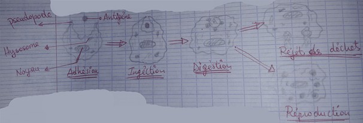
4 – Les hormones : certaines hormones ont des effets enzymatiques et agissent pour la destruction de l’antigène « Microbe ».
- Il existe des protéines appelé système complément qui facilite le phagocyte en se fixant sur les cellules antigènes et immunitaire.
- Il existe plusieurs types de globule blanc :
+ Macrophage et Monocyte : Intervienne dans l’immunité naturelle.
+ Lymphocyte : intervienne dans l’immunité Spécifique.
5 – Notion du Soi et Non-soi : le corps humain lutte contre le corps étranger « Non-soi » ou antigène sans qu’ils agissent sur les cellules de « Soi ».
Antigène : toute corps étranger susceptible d’être reconnue et déclenche une réponse immunitaire, les antigènes présentent à leurs surfaces des déterminant antigénique « Epitope » contre lesquelles sont dirigés vers les réaction immunitaire.
Tous les antigènes possèdent que deux caractéristiques :
- Pouvoir pathogénique : plus ou moins important pour provoquer les maladies.
- Pouvoir immunitaire : qui déclenche une réaction immunitaire.
Il existe deux types de CMH « Complexe Majeurs Hytocompatibilité »
- CMH1 : se trouve chez tous les cellules nuclées sauf les cellules sexuelles et les globules rouges.
- CMH2 : se trouve sur les cellules immunitaires.
Les cellules immunitaires peuvent distinguées l’épitope s’il est du soi ou non-soi si l’épitope est d’origine étranger on remarque une déclanchement d’une réaction immunitaire, mais s’il est du soi n’a aucune réponse immunitaire.
Donc le non-soi est l’ensemble des molécules étrangers à l’organisme le soi est l’ensemble des organes en tissus ou cellules issus de la programmation génétique de la cellule œuf.
- Position génétique du CMH :
Les gènes qui contrôlent le système CMH se trouve sur le chromosome N°6, chacun de ces gènes possèdent un nombre approximatif d’allèle codominant, les gènes reproduisent en deux groupes :
+ Les gènes déterminant CMH1 « ABC ».
+ Les gènes « DP, DQ et DR » déterminent CMH2.
Les nombres d’allèle approximative :
A « 25 » B « 50 » C « 10 »
DP « 5 » DQ « 10 » DR « 15 »
Les propriétés de CMH sont :
+ Polyallèlie.
+ Codominance.
+ Liaison absolue.
Remarque :
Transmission sanguine :
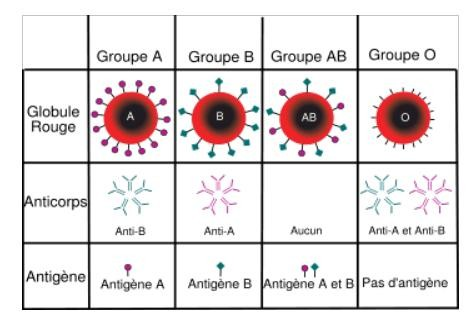
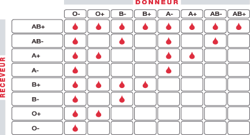
II – Immunité Spécifique :
Si l’immunité non-spécifique est incapable de détruite le microbe ou arrêter l’attaque microbienne on constate l’intervention de l’immunité spécifique, par l’intermédiaire des « lymphocyte » ce type d’immunité est transférable d’un individu vers un autre.
Il existe deux types d’immunité spécifique :
- RIMC « Réponse Immunitaire en Médiation Cellulaire » : transférable par les cellules.
- RIMH « Réponse Immunitaire en Médiation Hormonale » : transférable par le sérum.
1 – RIMC: dans ce type d’immunité le corps humain utilise des types de globules blancs appelé « Lymphocyte ».
Les lymphocytes sont des cellules formées par des organes immunitaires :
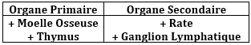
Il existe deux types des cellules lymphatiques :
- Lymphocyte B « LB » : responsable de production des anticorps elle intervienne dans le RIMH.
- Lymphocyte T « LT » : sont des cellules produit par la moelle osseuse, ganglion lymphatique et la rate.
Dans le thymus LT acquise l’immunocompétence et chaque cellules LT reçoit des récepteurs membranaires et un déterminant antigénique Maturation de LT.
Dans le thymus aussi LT se distingue en deux LT4 et LT8, LT8 capable à détruite l’antigène après le passage par trois phases :
a – Phase d’induction : marquer par la reconnaissance entre LT et l’antigène, sécrétion de IL1 par macrophage.
b – Phase d’amplification : marquer par l’activation de cellule LT4 qui secrète IL2 responsable de l’activation et la reproduction de cellules de LT8 et transfert de LT8 vers les cellules de LTC « cytotoxique ».
c – Phase effectrice : les cellules LTC sont capable à détruite l’antigène après la pénétration de Ca2+ et l’exocytose de la vésicule et la libération de perforine dans l’espèce inter cellulaire. Les molécules de perforine rentrent dans les cellules microbiennes pour la formation des ports qui permettent la rentrée d’eau et de sel minéraux et l’éclatement de l’antigène.
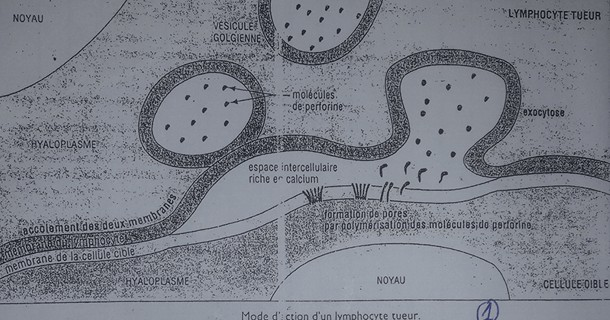
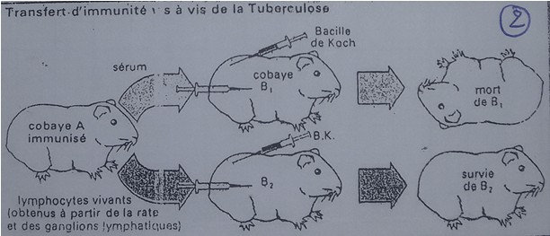
2 – RIMH : dans ce type immunitaire spécifique on constate l’utilisation des anticorps qui existe dans le sérum sanguin.
La formation des anticorps passe par trois phases :
a – Phase d’induction : marquer par l’activation des cellules LB après la reconnaissance avec l’antigène et le frottement avec les cellules LT4 et le macrophage et la sécrétion de IL1.
b – Phase d’amplification : Marquer par les rôles de cellules LT4 qui secrète IL4 responsable de la reproduction de LB et IL6 responsable de transformation de LB vers plasmocyte.
c – Phase effectrice : les plasmocytes secrètent les anticorps dans le sang « sérum » que le porte vers les cellules cibles « antigène » pour la destruction de cet antigène.
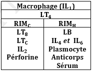
+ Les rôles des anticorps « Immuno-globules » :
- Empêche la liaison des antigènes avec les cellules du corps.
- Empêche les toxines microbiennes.
- Facilite la phagocytose.
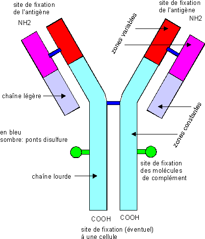
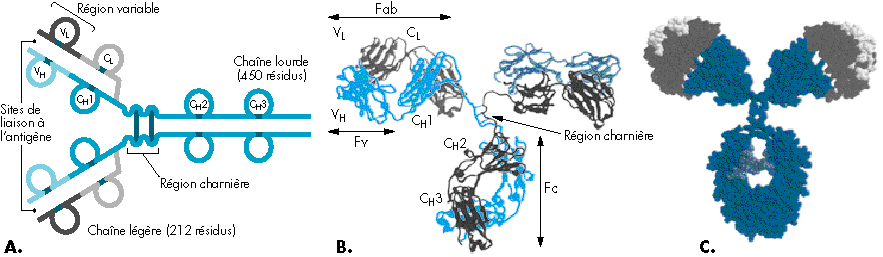
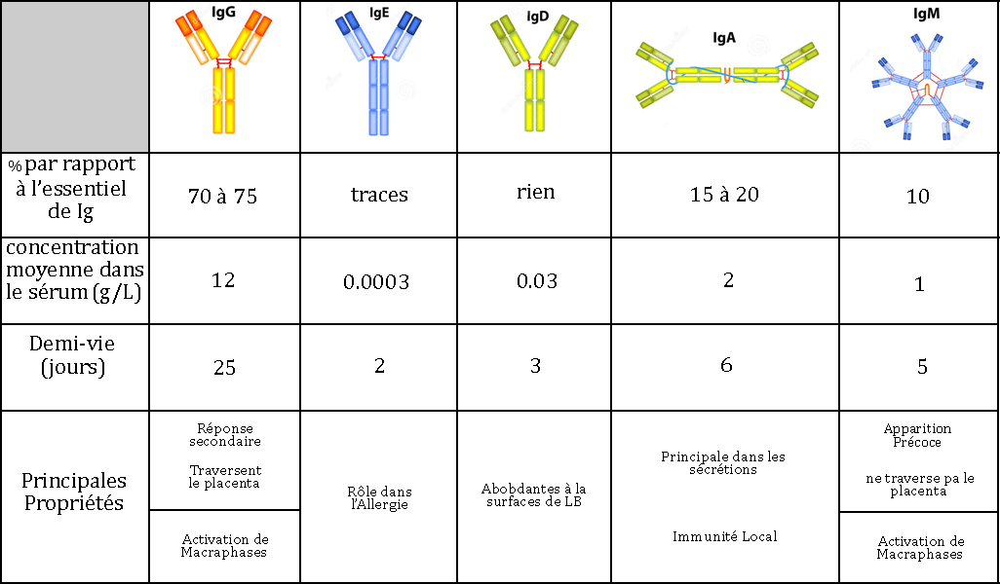
+ Coopération Immunitaire : la destruction de l’antigène nécessite parfois la coopération entre plusieurs types d’immunité coopération entre « RIMC et RIMH ».
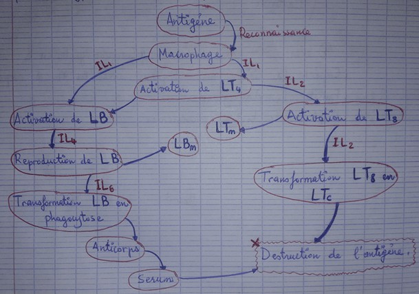
Remarque :
+ Vaccination : est la sensibilisation du corps contre le microbe pour qu’il produit une mémoire immunitaire.
+ Vaccin de « BCG » contre la tuberculose, traitement du « Bacil de Koch » BK par des substances chimiques ou température élever pour qu’il perte la capacité pathogénique et garde la capacité immuno-génique.
+ Sérotopie : injection du sérum sanguin provenant d’un individu animal ou humain immunisé contre un antigène spécifique.
Il renferme des anticorps spécifiques peut être utiliser comme un traiteur.
+ Dysfonctionnement du système immunitaire :
Dans certaines cas le système immunitaire peut connaitre un dérèglement :
- Réaction violente : Allergie.
- Perturbation de reconnaissance : Maladie auto-immune.
- L’insuffisance de l’immunité : S.I.D.A.
1 - Allergie : c’est une réaction violente « hypersensibilité » à des antigènes normalement toléré appelé allergène.
+ Phase 1 : Hypersensibilité Immédiate marquer par la sécrétion massive de l’histamine.
+ Phase 2 : Hypersensibilité Retardée marquer par la sécrétion des autres médiateurs chimiques IL et la production de IgE.
Parmi les allergies en allergène : la poussière et graines de pollins.
2 - Maladie auto-immune : il s’agit des troubles due à une agressivité du système immunitaire vis-à-vis de l’organisme d’où une rupture de la tolérance du soi. Leurs mécanismes sont très divers.
Les maladies auto-immunes font intervenir des réponse immunitaire RIMC/H.
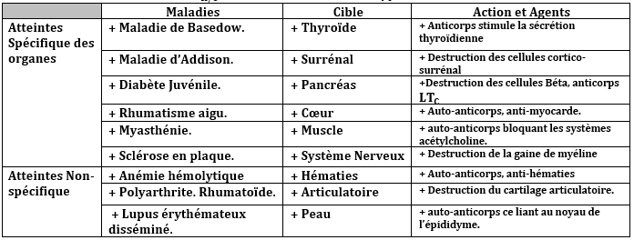
3 - S.I.D.A : C’est une maladie qui regroupe l’ensemble des symptômes :
- Les maladies appartimistes.
- La tuberculose.
- Développement du cellule cancéreux.
- Perte toute les moyens de défense.
La cause du sida est le VIH « virus immuno-déficiance humaine », le VIH est un rétro-virus qui renferme deux molécules d’ARN dont chacun est accompagné par une enzyme transcription reversé.
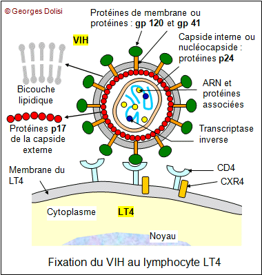
Les cellules cibles de VIH sont le Macrophage et LT4.
+ Transmission de VIH :
Le VIH se transmet systématiquement par trois voies :
- Voie sexuelle
- Voie sanguine
- De la mère vers son fœtus.
+ Mode d’action de la VIH :
Le VIH attaque le macrophage et LT4 :
- Fixation de cellules VIH sur les récepteurs de CD4.
- Injection de l’ARN viral dans le cytoplasme de LT4
- Transcription de l’ARN en ADN viral.
- Greffe de l’ADN viral dans le génome des cellules LT4.
- Transcription de l’ADN en ARN viral.
- Synthèse des protéines viraux et production des virus attaquent les autres cellules.
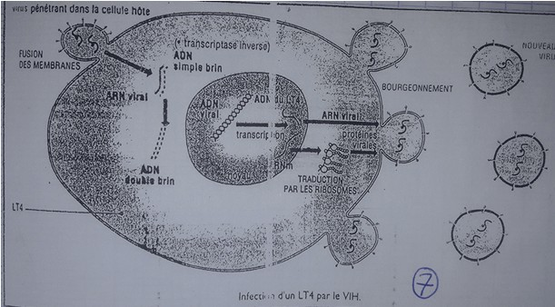
La maladie se développe en trois phases :
- Phase silencieuse.
- Phase mineure.
- Phase déclarée de SIDA.
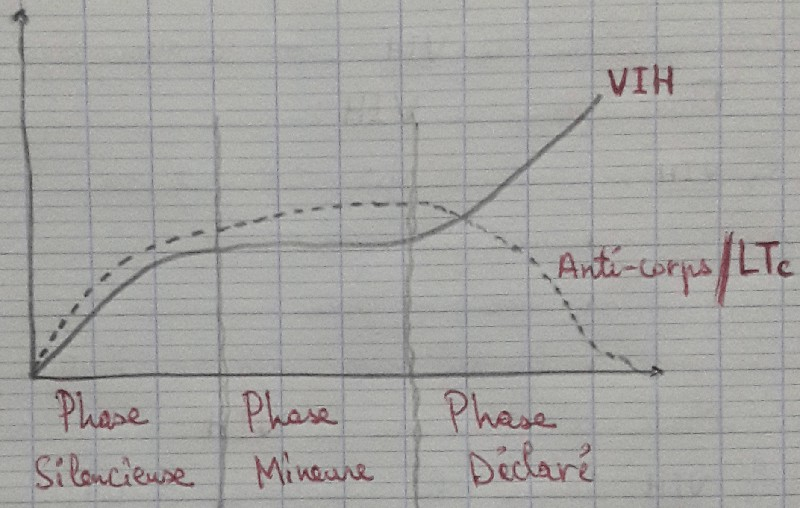
+ Lutte contre le SIDA :
La seule moyenne est la prévention à l’absence de traitement efficace ou vaccins contre le VIH :
- Utilisation de seringue ou usage unique.
- Contrôle du sang avant la transfusion.
- Eviter les rapports sexuels hétérogènes ou avec des partenaires inconnues.
+ Les aides immunitaires :
- Vaccination : le but de cette technique est de fabriquer des anticorps et des cellules immunitaires en mémoire par le sujet vacciné.
- Sérotopie : injection de sérum renferme des anticorps spécifiques ce qui entraine immunité immédiate.
- Greffe des organes immunitaires : c’est le transfert d’un organe immunitaire d’un individu vers un autre.
- Traitement immunomodulateur « antibiotique » : cette méthode est basée sur l’utilisation des substances stimulatrice comme Interlocune IL
N.B : les propriétés des immunités spécifiques sont :
- Spécificité de l’antigène.
- Sa mémoire immunitaire.
- Sa transférabilité.
- Sa diversité.
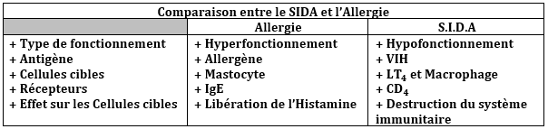